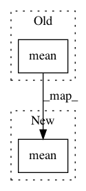

a65ee92b69c9dfa05defbee17abd7af09103f88e,rllib/agents/marwil/marwil_torch_policy.py,,marwil_loss,#,44
Before Change
adv = advantages - state_values
// Update averaged advantage norm.
policy.ma_adv_norm.add_(
1e-6 * (torch.mean(torch.pow(adv, 2.0)) - policy.ma_adv_norm))
// //xponentially weighted advantages.
exp_advs = torch.exp(policy.config["beta"] *
(adv / (1e-8 + torch.pow(policy.ma_adv_norm, 0.5))))
After Change
// Advantage estimation.
adv = advantages - state_values
adv_squared = torch.mean(torch.pow(adv, 2.0))
// Value loss.
policy.v_loss = 0.5 * adv_squared
In pattern: SUPERPATTERN
Frequency: 3
Non-data size: 2
Instances
Project Name: ray-project/ray
Commit Name: a65ee92b69c9dfa05defbee17abd7af09103f88e
Time: 2021-01-19
Author: sven@anyscale.io
File Name: rllib/agents/marwil/marwil_torch_policy.py
Class Name:
Method Name: marwil_loss
Project Name: OpenNMT/OpenNMT-py
Commit Name: 0e7bfac76b97e7630102687f7e6309e00e190091
Time: 2018-11-13
Author: benzurdopeters@gmail.com
File Name: onmt/decoders/ensemble.py
Class Name: EnsembleGenerator
Method Name: forward
Project Name: ray-project/ray
Commit Name: b7dbbfbf4111698145bb9e0bf2e34e36fef0430c
Time: 2020-11-25
Author: sven@anyscale.io
File Name: rllib/agents/sac/tests/test_sac.py
Class Name: TestSAC
Method Name: _sac_loss_helper